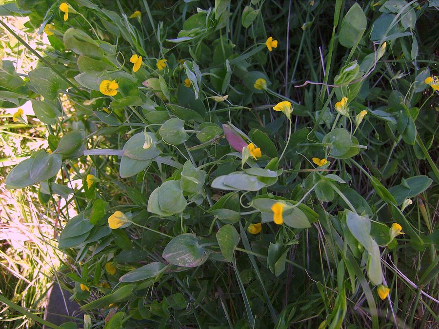

जंगली मटरYellow Vetchling
Lathyrus aphaca · Fabaceae · FLR-0237

- Scientific name वैज्ञानिक नाम
- Lathyrus aphaca L.
- Family कुल
- Fabaceae
- Hindi हिंदी
- जंगली मटर
- Local names स्थानीय नाम
- jangli matar, jungli matar, yellow vetchling, vetchling
- Status here यहाँ की स्थिति
- native
- Movement आवागमन
- Resident, here all year
- Known from कहाँ दर्ज
- Others have published records from the Basti–Ayodhya districts बस्ती–अयोध्या के ज़िलों से दूसरों के प्रकाशित अभिलेख
- IUCN IUCN
- not evaluated
- Review समीक्षा
- audited and independently read
When to look कब देखें
Expected mainly in January, February, March, April, May, October, November, December. मुख्यतः जनवरी, फ़रवरी, मार्च, अप्रैल, मई, अक्टूबर, नवंबर, दिसंबर में अपेक्षित।
Uses and possibilities उपयोग और संभावनाएँ
Drawn from the documented uses in the profile below, where each is labelled traditional, current or a research lead. All uses →
Tell it apart from इनसे अलग पहचानें
जंगली मटर / Yellow Vetchling
Lathyrus aphaca L. — Fabaceae
जंगली मटर — भारतीय खेतों में मसूर, चने और अरहर की फसलों के साथ आने वाली एक जंगली मटर, जिसके पीले फूल सर्दियों में दिखते हैं। बेल नाज़ुक, चढ़ने वाली, प्रायः अन्य पौधों पर सहारे के लिए निर्भर। पत्तियाँ बहुत अनोखी — असली पत्ती बिल्कुल नहीं, सिर्फ पत्तियों की जगह चौड़ी पंखुड़ियाँ (stipules) होती हैं। फली छोटी, 3-4 बीज वाली। मटर के परिवार का यह सदस्य नाइट्रोजन तो मिट्टी में बढ़ाता है पर पैदावार खेती में घटाता है।
Quick Identification त्वरित पहचान
| Feature | Description |
|---|---|
| Plant form | Climbing or scrambling annual, 20–60 cm, slender stems, glabrous |
| Leaves | Highly modified: leaflets greatly reduced or absent; instead large, ovate to oblong stipules (leaf-like) at base of petiole; tendrils from leaf rachis |
| Flowers | Solitary, yellow (rarely white or reddish), papilionaceous, 8–10 mm, on axillary peduncles |
| Pods | Linear-oblong, 2–3 cm, containing 3–4 round seeds |
| Seeds | Smooth, grey or brown, 5–7 mm diameter |
| Tendrils | Present, branching, from the leaf rachis |
| The test | No true leaflets; large stipules; yellow flowers; on winter crop fields |
Field tip: A delicate climbing herb with a most unusual leaf structure — instead of true leaflets, the plant has large ovate stipules and tendrils. Yellow flowers appear in winter in lentil and chickpea fields. Often overlooked because of its modest stature.
हिंदी — कैसे पहचानें: असली पत्तियाँ नहीं, सिर्फ बड़ी पंखुड़ियाँ (stipules) और सूत जैसी बेलें। पीले फूल।
Morphology आकारिकी
Biometrics (typical measurements in lentil and chickpea fields of northern India):
| Measurement | Range |
|---|---|
| Plant height / length | 20–60 cm |
| Stipule length | 1–3 cm |
| Stipule width | 0.8–2 cm |
| Flower length | 8–10 mm |
| Pod length | 2–3 cm |
| Seed diameter | 5–7 mm |
Leaves: Highly modified. What appear to be leaves are actually the large, ovate to oblong, entire stipules (up to 3 cm) at the base of each petiole. The petiole itself is transformed into a branching tendril used for climbing. True leaflets are entirely absent or reduced to minute bristles. This is a remarkable adaptation to reduce water loss in some environments and may provide structural complexity for grasping.
Stems: Slender, angular, glabrous, branching, pale green.
Flowers: Solitary (occasionally paired) in leaf axils, borne on short peduncles. The corolla is bright yellow (occasionally white, pale pink, or pale blue in some populations), papilionaceous, about 8–10 mm. Stamens are in the typical legume arrangement. Flowers are small but cheerful and attract small bees and flies.
Pods: Linear-oblong, 2–3 cm long, glabrous, green ripening to brownish, containing 3–4 round seeds separated by tissue.
Seeds: Smooth, round to slightly flattened, grey-brown or mottled, 5–7 mm across. Each seed has a small hilum.
Nitrogen fixation: As a legume, the plant forms root nodules with Rhizobium bacteria, fixing atmospheric nitrogen. This enriches soil but in the context of contamination in a pulse field, is not a benefit to the cultivator.
हिंदी: असली पत्तियाँ नहीं होती, सिर्फ पंखुड़ियाँ। बेलें पौधों को पकड़ती हैं। नाइट्रोजन मिट्टी में बढ़ाती है।
Behaviour & Ecology व्यवहार और पारिस्थितिकी
Lathyrus aphaca is a wild legume of Mediterranean and Central Asian origin. In eastern UP it is found as a weed in pulse cultivation (lentil, chickpea, pigeon pea) during the cool season. The plant climbs weakly on standing crops and other plants and does not compete strongly for light in open fields. However, its nitrogen-fixing capacity enriches soil, which can indirectly benefit the next season's crop if left unmanaged.
The plant is self-compatible but also accepts cross-pollination. Seeds are dispersed by water, on farm machinery, and in contaminated seed lots.
हिंदी: दाल की फसलों में आता है। अन्य पौधों पर चढ़ता है। नाइट्रोजन की मिट्टी में वृद्धि करता है।
Life Cycle / Phenology जीवन चक्र
| Month / season | Event |
|---|---|
| September–November | Seed germinates with autumn rains and sowing of pulse crops |
| December–February | Vegetative growth; plant develops tendrils and begins to climb |
| February–April | Flowering; continuous bloom through late winter and spring |
| April–May | Pod maturation; seed ripening; plant senesces |
Seeds are dormant and have been reported to remain viable for several years in soil. The plant is an obligate winter annual in eastern UP.
हिंदी: अक्टूबर-नवंबर में अंकुरण, दिसंबर-फरवरी में बेलें, फरवरी-अप्रैल में फूल और फली।
Associated Species / Interactions संबंधित प्रजातियाँ
- Pulse field associates: Found in lentil (Lens culinaris), chickpea (Cicer arietinum), and pigeon pea (Cajanus cajan) fields.
- Climbing support: Climbs on standing pulse plants without causing serious damage.
- Seed contamination: Often mixed with pulse seed, both in store and in fields.
- Nitrogen exchange: The root nodules of L. aphaca fix nitrogen in the pulse field, which is both a potential long-term benefit and a source of seed contamination.
Pests and Diseases कीट और रोग
- No specific pests; leaves are occasionally eaten by aphids or leaf-eating beetles.
- Generally healthy; no serious diseases reported.
Agricultural / Human Relevance कृषि प्रासंगिकता
As a weed:
Lathyrus aphaca is a minor weed of pulse cultivation in eastern UP. The plant climbs weakly on standing crops and causes limited direct damage, but it contaminates the seed at harvest. In lentil and chickpea markets, visible contamination with yellow vetchling seeds can reduce market value. The plant is easily hand-weeded from pulse fields.
Wild relative of pulse crops:
As a member of the Fabaceae, Lathyrus aphaca is a wild relative of cultivated pulses and may carry genetic diversity useful in breeding for drought tolerance and disease resistance (though this application is speculative and not yet developed).
Edibility:
The seeds are small but are edible and have been eaten in Central Asia historically (though they are not poisonous like some Lathyrus species, they are not nutritious enough to be a significant food). In India, this use is not recorded.
Today. The plant is a minor, sporadic weed of pulse cultivation in eastern UP, more notable for seed contamination than for direct crop competition.
Research direction (a lead, not a result). The genetic diversity of Lathyrus aphaca populations in Indian pulse fields could be documented, and the potential for disease resistance genes from this wild relative to be used in pulse breeding warrants investigation.
हिंदी: दाल की खेती का छोटा खरपतवार। बीज में मिल जाता है। हाथ से निकाल देते हैं।
Expected Locally स्थानीय रूप से अपेक्षित
Not a field record. Written from published accounts for eastern Uttar Pradesh. No confirmed local sighting yet — if you have seen it, that is what the atlas needs.
अभी तक स्थानीय पुष्टि नहीं। यह विवरण प्रकाशित स्रोतों से है, किसी अवलोकन से नहीं।
To be expected in lentil, chickpea, and pigeon pea fields throughout Basti district from December to April. The plant is most likely to be noticed at harvest time when it is mixed with pulse seed. GBIF holds published records from Basti district and the wider region. A first photograph would be valued, particularly showing the unusual leaf structure.
Distribution वितरण
Global range: Native to Mediterranean and Central Asia; distributed across temperate and subtropical regions as a weed of pulses.
In India: Widespread in pulse-growing areas of the northern plains, from Punjab through to Bihar and Odisha.
In Uttar Pradesh: Common in lentil and chickpea cultivation throughout, especially in the eastern districts.
In Basti district / eastern UP: Expected in pulse fields; GBIF records from the core region.
Research Questions शोध प्रश्न
Anyone can investigate these | कोई भी इन प्रश्नों की जाँच कर सकता है
- In how many lentil and chickpea fields in your village does Yellow Vetchling appear, and in what proportion of the seed harvest is it present? — Survey 10 pulse fields; collect seed samples at harvest; count contaminating vetchling seeds.
- Why are some Lathyrus aphaca plants yellow-flowered and others white or pale pink? — Collect seeds from both colour forms; grow them side by side; record colour inheritance in the next generation.
- Do the seeds of Yellow Vetchling germinate better if they are soaked, scarified, or left untreated? — Treat seed samples with each method; test germination rates.
- Which insects visit the yellow flowers of Lathyrus aphaca in February and March? — Observe flowering plants for 30 minutes in the morning and afternoon; list all visitors.
- If Yellow Vetchling is weeded out completely from a pulse field, does the nitrogen content of the soil remain higher the next year? / अगर आप दाल की खेती से पूरी तरह जंगली मटर निकाल दें तो अगले साल मिट्टी में नाइट्रोजन ज्यादा रहेगी? — Compare soil nitrogen levels in completely weeded and partially weeded adjacent fields.
Similar Species मिलती-जुलती प्रजातियाँ
| Species | How to tell apart | हिंदी | |
|---|---|---|---|
| [[ankri\ | Common vetch]] (Vicia sativa) | True leaflets present (not just stipules); purple or reddish flowers; different pod structure | असली पत्तियाँ होती हैं, बैंगनी फूल |
| Butterfly Pea (Clitoria ternatea) | Cultivated climber in gardens; blue flowers; true leaflets; different seed structure | बाग़ों में उगाया जाता है, नीले फूल | |
| [[pea\ | Garden pea]] (Pisum sativum) | Larger plant; true leaflets; white or pink flowers; much larger pods; cultivated | बहुत बड़ा, सफेद फूल, बड़ी फली |
Field rule: A slender climbing annual with no true leaflets (only large stipules and tendrils), yellow papilionaceous flowers, and small pods in pulse fields is Yellow Vetchling.
Taxonomy & Classification वर्गीकरण
Original description. Described by Carl Linnaeus in 1753 in Species Plantarum, p. 730. The epithet aphaca is from the Greek aphakē, an ancient name for a vetch or similar pulse.
Subspecies. Monotypic — no subspecies currently recognised.
Family and order placement. Fabaceae, order Fabales. The genus Lathyrus holds about 160 species of temperate and subtropical origin, many of which are cultivated as food crops or ornamentals.
Phylogenetic notes. Lathyrus aphaca is closely related to L. sativus (grass pea) and L. cicera, and all three are sometimes confused. Recent molecular studies confirm their positions within the Lathyrus genus.
IUCN status rationale. Not evaluated. Widespread in cultivation; not assessed.
Photo Gallery फोटो गैलरी
Photos needed आवश्यक फोटो
- [ ] Whole plant showing tendril structure (पूरा पौधा)
- [ ] Close view of leaf-like stipules and tendrils (पत्तियों की संरचना)
- [ ] Yellow flowers (पीले फूल)
- [ ] Pods with seeds (फली और बीज)
No photos yet — add field photos to media/species/yellow_vetchling/ and run node scripts/sync_photos.js.
References संदर्भ
- Linnaeus, C. (1753). Species Plantarum. Laurentii Salvii, Holmiae, Vol. 2, p. 730. [original description]
- Hooker, J.D. (1875). The Flora of British India, Vol. 2. L. Reeve, London.
- Duthie, J.F. (1903). Flora of the Upper Gangetic Plain and of the Adjacent Siwalik and Sub-Himalayan Tracts. Government Printing, Calcutta.
- Hanelt, P. (ed.) (2001). Mansfeld's Encyclopedia of Agricultural and Horticultural Crops (6 vols.). Springer, Berlin.
- Smykal, P., Kenicer, G., Flavell, A.J., et al. (2011). Phylogeny, phylogeography and demographic history of Lathyrus species. Molecular Phylogenetics and Evolution 59(3): 624–635.
- GBIF Occurrence Data — Lathyrus aphaca, India (2026).
Source file: species/flora/crops_associated/yellow_vetchling.md